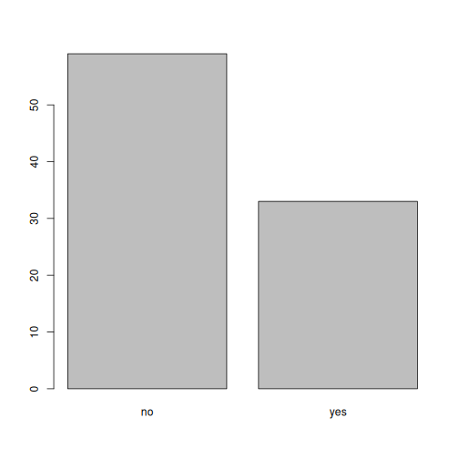
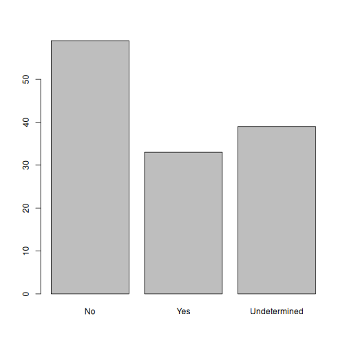

Starting with Data
Last updated on 2026-03-18 | Edit this page
Estimated time: 72 minutes
The main goals for this lessons are:
- To make sure that learners understand the structure of a dataframe
- To expose learners to factors. Their behavior is not necessarily intuitive, and so it is important that they are guided through it the first time they are exposed to it. The content of the lesson should be enough for learners to avoid common mistakes with them.
Overview
Questions
- How does
Rstore data? - What is a data.frame?
- How can I read a complete
.csvfile intoR? - How can I get basic summary information about my dataset?
- How can I change the way
Rtreats strings in my dataset? - Why would I want strings to be treated differently?
- How are dates represented in
Rand how can I change the format?
Objectives
- Load external data from a
.csvfile into a data frame. - Explore the structure and content of data.frames
- Understand how
Rassigns values to objects - Understand vector types and missing data
- Describe the difference between a factor and a string.
- Create and convert factors
- Examine and change date formats.
Acknowledgement
This workshop was adapted using material from the Data Carpentry
lessons R for Social Scientists,
specifically lesson 02-starting-with-data,
and R for Ecologists,
specifically how-r-thinks-about-data.
Other Materials
Set up
Start by opening up your RStudio project that you
created in a previous workshop
(called intro_r). Open a new R Notebook:
Click File -> New File -> R Notebook. Save your
R Notebook with a filename that makes sense, such as
starting_with_data.Rmd, in the scripts
folder.
When you open a new R Notebook, some explanatory text is
provided. This can be deleted so you can enter your own text and
code.
What are data frames?
Data frames are the de facto data structure for tabular data
in R, and what we use for data processing, statistics, and
plotting.
A data frame is the representation of data in the format of a table
where the columns are vectors that all have the same length. Data frames
are analogous to the more familiar spreadsheet in programs such as
Excel, with one key difference. Because columns are
vectors, each column must contain a single type of data (e.g.,
characters, integers, factors). For example, here is a figure depicting
a data frame comprising a numeric, a character, and a logical
vector.

Data frames can be created by hand, but most commonly they are
generated by the functions read_csv() or
read_table(); in other words, when importing spreadsheets
from your hard drive (or the web). We will now demonstrate how to import
tabular data using read_csv().
Presentation of the SAFI Data
SAFI (Studying African Farmer-Led Irrigation) is a study
looking at farming and irrigation methods in Tanzania and Mozambique.
The survey data was collected through interviews conducted between
November 2016 and June 2017. For this lesson, we will be using a subset
of the available data. For information about the orginal dataset, see
the dataset description.
We will be using a subset of the dataset that has been provided
(data/raw/SAFI_clean.csv). In this dataset, the missing
data is encoded as NULL, each row holds information for a
single interview respondent, and the columns represent:
| column_name | description |
|---|---|
| key_id | Added to provide a unique Id for each observation. (The InstanceID field does this as well but it is not as convenient to use) |
| village | Village name |
| interview_date | Date of interview |
| no_membrs | How many members in the household? |
| years_liv | How many years have you been living in this village or neighboring village? |
| respondent_wall_type | What type of walls does their house have (from list) |
| rooms | How many rooms in the main house are used for sleeping? |
| memb_assoc | Are you a member of an irrigation association? |
| affect_conflicts | Have you been affected by conflicts with other irrigators in the area? |
| liv_count | Number of livestock owned. |
| items_owned | Which of the following items are owned by the household? (list) |
| no_meals | How many meals do people in your household normally eat in a day? |
| months_lack_food | Indicate which months, In the last 12 months have you faced a situation when you did not have enough food to feed the household? |
| instanceID | Unique identifier for the form data submission |
Download the data
If you did not previously downloaded the SAFI_clean.csv
dataset in the previous workshop,
please follow the instructions below to download it. If you already have
the file in your data/raw/ folder, jump to the
Importing data section.
We will be using a dataset called SAFI_clean.csv. The
direct download link for this file is: https://github.com/datacarpentry/r-socialsci/blob/main/episodes/data/SAFI_clean.csv.
This data is a slightly cleaned up version of the SAFI Survey Results
available on figshare.
First, we need to create a new folder called data to
store this dataset. Go to the Files pane, and create a new folder named
data, and two subfolders called cleaned and
raw.
intro_r
│
└── scripts
│
└── data
│ └── cleaned
│ └── raw
│
└─── images
│
└─── documentsYou can either download the SAFI_clean.csv dataset used
for this workshop from the GitHub link or with
R. You can download the file from this GitHub link
and save it as SAFI_clean.csv in the data/raw
directory you just created. Or you can do this directly from
R by copying and pasting this in your console:
download.file( "https://raw.githubusercontent.com/datacarpentry/r-socialsci/main/episodes/data/SAFI_clean.csv", "data/raw/SAFI_clean.csv", mode = "wb" )
Importing data
You are going to load the data in R’s memory using the
function read_csv() from the
readr package, which is part of the
tidyverse; learn more about the
tidyverse collection of packages here.
readr gets installed as part as the
tidyverse installation. When you load the
tidyverse
(library(tidyverse)), the core packages (the packages used
in most data analyses) get loaded, including
readr.
Before proceeding, however, this is a good opportunity to talk about
conflicts. Certain packages we load can end up introducing function
names that are already in use by pre-loaded R packages. For
instance, when we load the tidyverse package below, we will introduce
two conflicting functions: filter() and lag().
This happens because filter and lag are
already functions used by the stats package (already pre-loaded in
R). What will happen now is that if we, for example, call
the filter() function, R will use the
dplyr::filter() version and not the
stats::filter() one. This happens because, if conflicted,
by default R uses the function from the most recently
loaded package. Conflicted functions may cause you some trouble in the
future, so it is important that we are aware of them so that we can
properly handle them, if we want.
To do so, we just need the following functions from the conflicted package:
-
conflicted::conflict_scout(): Shows us any conflicted functions. -
conflict_prefer("function", "package_prefered"): Allows us to choose the default function we want from now on.
It is also important to know that we can, at any time, just call the
function directly from the package we want, such as
stats::filter().
Even with the use of an RStudio project, it can be
difficult to learn how to specify paths to file locations. Enter the
here package! The here package creates
paths relative to the top-level directory (your RStudio project). These
relative paths work regardless of where the associated source
file lives inside your project, like analysis projects with data and
reports in different subdirectories. This is an important contrast to
using setwd(), which depends on the way you order your
files on your computer.
Before we can use the read_csv() and here()
functions, we need to load the tidyverse and
here packages.
Add a new code chunk in your notebook, load the
tidyverse and here packages, and read in the
SAFI dataset. We’ll assign the dataset to
an object called interviews.
If you recall, the missing data is encoded as NULL in
the dataset. We’ll tell this to the read_csv() function, so
R will automatically convert all the NULL
entries in the dataset into NA.
R
library(tidyverse)
library(here)
interviews <- read_csv(
here("data", "raw", "SAFI_clean.csv"),
na = "NULL")
In the above code, we notice the here() function takes
folder and file names as inputs (e.g., "data",
"SAFI_clean.csv"), each enclosed in quotations
("") and separated by a comma. The here() will
accept as many names as are necessary to navigate to a particular file
(e.g., here("data", "raw", "SAFI_clean.csv)).
The here() function can accept the folder and file names
in an alternate format, using a slash (“/”) rather than commas to
separate the names. The two methods are equivalent, so that
here("data", "raw", "SAFI_clean.csv") and
here("data/raw/SAFI_clean.csv") produce the same result.
(The slash is used on all operating systems; backslashes are not
used.)
Assigning objects
In R, we can assign inputs to a named
object. We do this using the assignment
arrow <-,
Alt+-
(Windows and Linux) or
Option+-(Mac).What
we are doing here is taking the result of the code on the right side of
the arrow (reading in the csv file), and assigning it to an object whose
name is on the left side of the arrow (interviews).
You may notice that the contents of the interviews data frame do not
display below the code cell. This is because assignments
(<-) don’t display anything. If we want to check that
our data has been loaded, we can see the contents of the data frame by
typing its name: interviews into a new code chunk.
R
interviews
## Try also
## view(interviews)
## head(interviews)
OUTPUT
# A tibble: 131 × 14
key_ID village interview_date no_membrs years_liv respondent_wall_type
<dbl> <chr> <dttm> <dbl> <dbl> <chr>
1 1 God 2016-11-17 00:00:00 3 4 muddaub
2 2 God 2016-11-17 00:00:00 7 9 muddaub
3 3 God 2016-11-17 00:00:00 10 15 burntbricks
4 4 God 2016-11-17 00:00:00 7 6 burntbricks
5 5 God 2016-11-17 00:00:00 7 40 burntbricks
6 6 God 2016-11-17 00:00:00 3 3 muddaub
7 7 God 2016-11-17 00:00:00 6 38 muddaub
8 8 Chirodzo 2016-11-16 00:00:00 12 70 burntbricks
9 9 Chirodzo 2016-11-16 00:00:00 8 6 burntbricks
10 10 Chirodzo 2016-12-16 00:00:00 12 23 burntbricks
# ℹ 121 more rows
# ℹ 8 more variables: rooms <dbl>, memb_assoc <chr>, affect_conflicts <chr>,
# liv_count <dbl>, items_owned <chr>, no_meals <dbl>, months_lack_food <chr>,
# instanceID <chr>Exploring data frames
When working with the output of a new function, it’s often a good
idea to check the class():
R
class(interviews)
OUTPUT
[1] "spec_tbl_df" "tbl_df" "tbl" "data.frame" Whoa! What is this thing? It has multiple
classesspec_tbl_df, tbl_df, tbl,
and data.frame? Well, it’s called a tibble,
and it is the tidyverse version of a data.frame. It
is a data.frame, but with some added perks. It prints out a
little more nicely, it highlights NA values and negative
values in red, and it will generally communicate with you more (in terms
of warnings and errors, which is a good thing).
As a tibble, the type of data included in each column is
listed in an abbreviated fashion below the column names. For instance,
here key_ID is a column of floating point numbers
(abbreviated <dbl> for the word ‘double’),
respondent_wall_type is a column of characters (
<chr>) and theinterview_date is a column
in the “date and time” format (<dttm>).
tidyverse vs. base R
As we begin to delve more deeply into the tidyverse, we
should briefly pause to mention some of the reasons for focusing on the
tidyverse set of tools. In R, there are often many ways to
get a job done, and there are other approaches that can accomplish tasks
similar to the tidyverse.
The phrase base R is used to refer to
approaches that utilize functions contained in R’s default
packages. We will use some base R functions, such as
str(), head(), and nrow(), and we
will be using more scattered throughout this workshop. However, there
are some key base R approaches we will not be teaching.
These include square bracket subsetting. You may come across code
written by other people that looks like
interviews[1:10, 2], which is a base R
command. If you’re interested in learning more about these approaches,
you can check out other Carpentries lessons like the Software Carpentry Programming with R
lesson.
We choose to teach the tidyverse set of packages because
they share a similar syntax and philosophy, making them consistent and
producing highly readable code. They are also very flexible and
powerful, with a growing number of packages designed according to
similar principles and to work well with the rest of the packages. The
tidyverse packages tend to have very clear documentation
and wide array of learning materials that tend to be written with novice
users in mind. Finally, the tidyverse has only continued to
grow, and has strong support from RStudio, which implies
that these approaches will be relevant into the future.
Note
read_csv() assumes that fields are delimited by commas.
However, in several countries, the comma is used as a decimal separator
and the semicolon (;) is used as a field delimiter. If you want to read
in this type of files in R, you can use the
read_csv2 function. It behaves exactly like
read_csv but uses different parameters for the decimal and
the field separators. If you are working with another format, they can
be both specified by the user. Check out the help for
read_csv() by typing ?read_csv to learn more.
There is also the read_tsv() for tab-separated data files,
and read_delim() allows you to specify more details about
the structure of your file.
Inspecting data frames
When calling a tbl_df object (like
interviews), there is already a lot of information about
our data frame being displayed such as the number of rows, the number of
columns, the names of the columns, and as we just saw the class of data
stored in each column. However, there are functions to extract this
information from data frames. Here is a non-exhaustive list of some of
these functions. Let’s try them out!
Size:
-
dim(interviews)- returns a vector with the number of rows as the first element, and the number of columns as the second element (thedimensions of the object) -
nrow(interviews)- returns the number of rows -
ncol(interviews)- returns the number of columns
Content:
-
head(interviews)- shows the first 6 rows -
tail(interviews)- shows the last 6 rows
Names:
-
names(interviews)- returns the column names (synonym ofcolnames()fordata.frameobjects)
Summary:
-
str(interviews)- structure of the object and information about the class, length and content of each column -
summary(interviews)- summary statistics for each column -
glimpse(interviews)- returns the number of columns and rows of the tibble, the names and class of each column, and previews as many values will fit on the screen. Unlike the other inspecting functions listed above,glimpse()is not abase Rfunction so you need to have thetidyversepackage loaded to be able to execute it.
Note: most of these functions are “generic.” They can be used on other types of objects besides data frames or tibbles.
Using functions
We can view the first few rows with the head() function,
and the last few rows with the tail() function:
R
head(interviews)
OUTPUT
# A tibble: 6 × 14
key_ID village interview_date no_membrs years_liv respondent_wall_type
<dbl> <chr> <dttm> <dbl> <dbl> <chr>
1 1 God 2016-11-17 00:00:00 3 4 muddaub
2 2 God 2016-11-17 00:00:00 7 9 muddaub
3 3 God 2016-11-17 00:00:00 10 15 burntbricks
4 4 God 2016-11-17 00:00:00 7 6 burntbricks
5 5 God 2016-11-17 00:00:00 7 40 burntbricks
6 6 God 2016-11-17 00:00:00 3 3 muddaub
# ℹ 8 more variables: rooms <dbl>, memb_assoc <chr>, affect_conflicts <chr>,
# liv_count <dbl>, items_owned <chr>, no_meals <dbl>, months_lack_food <chr>,
# instanceID <chr>R
tail(interviews)
OUTPUT
# A tibble: 6 × 14
key_ID village interview_date no_membrs years_liv respondent_wall_type
<dbl> <chr> <dttm> <dbl> <dbl> <chr>
1 192 Chirodzo 2017-06-03 00:00:00 9 20 burntbricks
2 126 Ruaca 2017-05-18 00:00:00 3 7 burntbricks
3 193 Ruaca 2017-06-04 00:00:00 7 10 cement
4 194 Ruaca 2017-06-04 00:00:00 4 5 muddaub
5 199 Chirodzo 2017-06-04 00:00:00 7 17 burntbricks
6 200 Chirodzo 2017-06-04 00:00:00 8 20 burntbricks
# ℹ 8 more variables: rooms <dbl>, memb_assoc <chr>, affect_conflicts <chr>,
# liv_count <dbl>, items_owned <chr>, no_meals <dbl>, months_lack_food <chr>,
# instanceID <chr>We used these functions with just one argument, the object
interviews, and we didn’t give the argument a name. In
R, a function’s arguments come in a particular order, and
if you put them in the correct order, you don’t need to name them. In
this case, the name of the argument is x, so we can name it
if we want, but since we know it’s the first argument, we don’t need
to.
Some arguments are optional. For example, the n argument
in head() specifies the number of rows to print. It
defaults to 6, but we can override that by specifying a different
number:
R
head(interviews, n = 10)
OUTPUT
# A tibble: 10 × 14
key_ID village interview_date no_membrs years_liv respondent_wall_type
<dbl> <chr> <dttm> <dbl> <dbl> <chr>
1 1 God 2016-11-17 00:00:00 3 4 muddaub
2 2 God 2016-11-17 00:00:00 7 9 muddaub
3 3 God 2016-11-17 00:00:00 10 15 burntbricks
4 4 God 2016-11-17 00:00:00 7 6 burntbricks
5 5 God 2016-11-17 00:00:00 7 40 burntbricks
6 6 God 2016-11-17 00:00:00 3 3 muddaub
7 7 God 2016-11-17 00:00:00 6 38 muddaub
8 8 Chirodzo 2016-11-16 00:00:00 12 70 burntbricks
9 9 Chirodzo 2016-11-16 00:00:00 8 6 burntbricks
10 10 Chirodzo 2016-12-16 00:00:00 12 23 burntbricks
# ℹ 8 more variables: rooms <dbl>, memb_assoc <chr>, affect_conflicts <chr>,
# liv_count <dbl>, items_owned <chr>, no_meals <dbl>, months_lack_food <chr>,
# instanceID <chr>If we order them correctly, we don’t have to name either:
R
head(interviews, 10)
OUTPUT
# A tibble: 10 × 14
key_ID village interview_date no_membrs years_liv respondent_wall_type
<dbl> <chr> <dttm> <dbl> <dbl> <chr>
1 1 God 2016-11-17 00:00:00 3 4 muddaub
2 2 God 2016-11-17 00:00:00 7 9 muddaub
3 3 God 2016-11-17 00:00:00 10 15 burntbricks
4 4 God 2016-11-17 00:00:00 7 6 burntbricks
5 5 God 2016-11-17 00:00:00 7 40 burntbricks
6 6 God 2016-11-17 00:00:00 3 3 muddaub
7 7 God 2016-11-17 00:00:00 6 38 muddaub
8 8 Chirodzo 2016-11-16 00:00:00 12 70 burntbricks
9 9 Chirodzo 2016-11-16 00:00:00 8 6 burntbricks
10 10 Chirodzo 2016-12-16 00:00:00 12 23 burntbricks
# ℹ 8 more variables: rooms <dbl>, memb_assoc <chr>, affect_conflicts <chr>,
# liv_count <dbl>, items_owned <chr>, no_meals <dbl>, months_lack_food <chr>,
# instanceID <chr>Additionally, if we name them, we can put them in any order we want:
R
head(n = 10, x = interviews)
OUTPUT
# A tibble: 10 × 14
key_ID village interview_date no_membrs years_liv respondent_wall_type
<dbl> <chr> <dttm> <dbl> <dbl> <chr>
1 1 God 2016-11-17 00:00:00 3 4 muddaub
2 2 God 2016-11-17 00:00:00 7 9 muddaub
3 3 God 2016-11-17 00:00:00 10 15 burntbricks
4 4 God 2016-11-17 00:00:00 7 6 burntbricks
5 5 God 2016-11-17 00:00:00 7 40 burntbricks
6 6 God 2016-11-17 00:00:00 3 3 muddaub
7 7 God 2016-11-17 00:00:00 6 38 muddaub
8 8 Chirodzo 2016-11-16 00:00:00 12 70 burntbricks
9 9 Chirodzo 2016-11-16 00:00:00 8 6 burntbricks
10 10 Chirodzo 2016-12-16 00:00:00 12 23 burntbricks
# ℹ 8 more variables: rooms <dbl>, memb_assoc <chr>, affect_conflicts <chr>,
# liv_count <dbl>, items_owned <chr>, no_meals <dbl>, months_lack_food <chr>,
# instanceID <chr>Generally, it’s good practice to start with the required arguments, like the data.frame whose rows you want to see, and then to name the optional arguments. If you are ever unsure, it never hurts to explicitly name an argument.
Aside: Getting Help
To learn more about a function, you can type a ? in
front of the name of the function, which will bring up the official
documentation for that function:
R
?head
Function documentation is written by the authors of the functions, so they can vary pretty widely in their style and readability. The first section, Description, gives you a concise description of what the function does, but it may not always be enough. The Arguments section defines all the arguments for the function and is usually worth reading thoroughly. Finally, the Examples section at the end will often have some helpful examples that you can run to get a sense of what the function is doing.
Another great source of information is package
vignettes. Many packages have vignettes, which are like
tutorials that introduce the package, specific functions, or general
methods. You can run vignette(package = "package_name") to
see a list of vignettes in that package. Once you have a name, you can
run vignette("vignette_name", "package_name") to view that
vignette. You can also use a web browser to go to
https://cran.r-project.org/web/packages/package_name/vignettes/
where you will find a list of links to each vignette. Some packages will
have their own websites, which often have nicely formatted vignettes and
tutorials.
Finally, learning to search for help is probably the most useful
skill for any R user. The key skill is figuring out what
you should actually search for. It’s often a good idea to start your
search with R or R programming. If you have
the name of a package you want to use, start with
R package_name.
Let’s investigate str a bit more.
R
str(interviews)
OUTPUT
spc_tbl_ [131 × 14] (S3: spec_tbl_df/tbl_df/tbl/data.frame)
$ key_ID : num [1:131] 1 2 3 4 5 6 7 8 9 10 ...
$ village : chr [1:131] "God" "God" "God" "God" ...
$ interview_date : POSIXct[1:131], format: "2016-11-17" "2016-11-17" ...
$ no_membrs : num [1:131] 3 7 10 7 7 3 6 12 8 12 ...
$ years_liv : num [1:131] 4 9 15 6 40 3 38 70 6 23 ...
$ respondent_wall_type: chr [1:131] "muddaub" "muddaub" "burntbricks" "burntbricks" ...
$ rooms : num [1:131] 1 1 1 1 1 1 1 3 1 5 ...
$ memb_assoc : chr [1:131] NA "yes" NA NA ...
$ affect_conflicts : chr [1:131] NA "once" NA NA ...
$ liv_count : num [1:131] 1 3 1 2 4 1 1 2 3 2 ...
$ items_owned : chr [1:131] "bicycle;television;solar_panel;table" "cow_cart;bicycle;radio;cow_plough;solar_panel;solar_torch;table;mobile_phone" "solar_torch" "bicycle;radio;cow_plough;solar_panel;mobile_phone" ...
$ no_meals : num [1:131] 2 2 2 2 2 2 3 2 3 3 ...
$ months_lack_food : chr [1:131] "Jan" "Jan;Sept;Oct;Nov;Dec" "Jan;Feb;Mar;Oct;Nov;Dec" "Sept;Oct;Nov;Dec" ...
$ instanceID : chr [1:131] "uuid:ec241f2c-0609-46ed-b5e8-fe575f6cefef" "uuid:099de9c9-3e5e-427b-8452-26250e840d6e" "uuid:193d7daf-9582-409b-bf09-027dd36f9007" "uuid:148d1105-778a-4755-aa71-281eadd4a973" ...
- attr(*, "spec")=
.. cols(
.. key_ID = col_double(),
.. village = col_character(),
.. interview_date = col_datetime(format = ""),
.. no_membrs = col_double(),
.. years_liv = col_double(),
.. respondent_wall_type = col_character(),
.. rooms = col_double(),
.. memb_assoc = col_character(),
.. affect_conflicts = col_character(),
.. liv_count = col_double(),
.. items_owned = col_character(),
.. no_meals = col_double(),
.. months_lack_food = col_character(),
.. instanceID = col_character()
.. )
- attr(*, "problems")=<externalptr> We get quite a bit of useful information here. First, we are told that we have a data.frame of 131 observations, or rows, and 14 variables, or columns.
Next, we get a bit of information on each variable, including its
type (int or chr) and a quick peek at the
first 10 values. You might ask why there is a $ in front of
each variable. This is because the $ is an operator that
allows us to select individual columns from a data.frame.
The $ operator also allows you to use tab-completion to
quickly select which variable you want from a given data.frame. For
example, to get the village variable, we can type
interviews$ and then hit Tab.
We get a list of the variables that we can move through with up and down
arrow keys. Hit Enter when you reach
village, which should finish this code:
R
interviews$village
OUTPUT
[1] "God" "God" "God" "God" "God" "God"
[7] "God" "Chirodzo" "Chirodzo" "Chirodzo" "God" "God"
[13] "God" "God" "God" "God" "God" "God"
[19] "God" "God" "God" "God" "Ruaca" "Ruaca"
[25] "Ruaca" "Ruaca" "Ruaca" "Ruaca" "Ruaca" "Ruaca"
[31] "Ruaca" "Ruaca" "Ruaca" "Chirodzo" "Chirodzo" "Chirodzo"
[37] "Chirodzo" "God" "God" "God" "God" "God"
[43] "Chirodzo" "Chirodzo" "Chirodzo" "Chirodzo" "Chirodzo" "Chirodzo"
[49] "Chirodzo" "Chirodzo" "Chirodzo" "Chirodzo" "Chirodzo" "Chirodzo"
[55] "Chirodzo" "Chirodzo" "Chirodzo" "Chirodzo" "Chirodzo" "Chirodzo"
[61] "Chirodzo" "Chirodzo" "Chirodzo" "Chirodzo" "Chirodzo" "Chirodzo"
[67] "Chirodzo" "Chirodzo" "Chirodzo" "Chirodzo" "Ruaca" "Chirodzo"
[73] "Ruaca" "Ruaca" "Ruaca" "God" "Ruaca" "God"
[79] "Ruaca" "God" "God" "God" "God" "God"
[85] "God" "God" "God" "God" "God" "Ruaca"
[91] "Ruaca" "Ruaca" "Ruaca" "Ruaca" "God" "God"
[97] "Ruaca" "Ruaca" "Ruaca" "Ruaca" "Ruaca" "Ruaca"
[103] "God" "God" "Ruaca" "Ruaca" "Ruaca" "Ruaca"
[109] "Ruaca" "Ruaca" "God" "Ruaca" "Ruaca" "Ruaca"
[115] "Ruaca" "Ruaca" "God" "God" "Ruaca" "Ruaca"
[121] "Ruaca" "Ruaca" "Ruaca" "Ruaca" "Ruaca" "Chirodzo"
[127] "Ruaca" "Ruaca" "Ruaca" "Chirodzo" "Chirodzo"Vectors: the building block of data
You might have noticed that our last result looked different from
when we printed out the interviews data.frame itself.
That’s because it is not a data.frame, it is a vector.
A vector is a 1-dimensional series of values, in this case a vector of
characters representing the village name.
Data.frames are made up of vectors; each column in a data.frame is a
vector. Vectors are the basic building blocks of all data in
R. Basically, everything in R is a vector, a
bunch of vectors stitched together in some way, or a function.
Understanding how vectors work is crucial to understanding how
R treats data, so we will spend some time learning about
them.
There are 4 main types of vectors (also known as atomic vectors):
"character"for strings of characters, like ourvillageorrespondent_wall_typecolumns. Each entry in a character vector is wrapped in quotes. In other programming languages, this type of data may be referred to as “strings”."integer"for integers. All the numeric values ininterviewsare integers. You may sometimes see integers represented like2Lor20L. TheLindicates toRthat it is an integer, instead of the next data type,"numeric"."numeric", aka"double", vectors can contain numbers including decimals. Other languages may refer to these as “float” or “floating point” numbers."logical"forTRUEandFALSE, which can also be represented asTandF. In other contexts, these may be referred to as “Boolean” data.
Vectors can only be of a single type. Since each
column in a data.frame is a vector, this means an accidental character
following a number, like 29, can change the type of the
whole vector. Mixing up vector types is one of the most common mistakes
in R, and it can be tricky to figure out. It’s often very
useful to check the types of vectors.
To create a vector from scratch, we can use the c()
function, putting values inside, separated by commas.
R
c(1, 2, 5, 12, 4)
OUTPUT
[1] 1 2 5 12 4As you can see, those values get printed out in the console, just
like with interviews$village. To store this vector so we
can continue to work with it, we need to assign it to an object.
R
num <- c(1, 2, 5, 12, 4)
You can check what kind of object num is with the
class() function.
R
class(num)
OUTPUT
[1] "numeric"We see that num is a numeric vector.
Let’s try making a character vector:
R
char <- c("apple", "pear", "grape")
class(char)
OUTPUT
[1] "character"Remember that each entry, like "apple", needs to be
surrounded by quotes, and entries are separated with commas. If you do
something like "apple, pear, grape", you will have only a
single entry containing that whole string.
Finally, let’s make a logical vector:
R
logi <- c(TRUE, FALSE, TRUE, TRUE)
class(logi)
OUTPUT
[1] "logical"Challenge 1: Coercion
Since vectors can only hold one type of data, something has to be done when we try to combine different types of data into one vector.
- What type will each of these vectors be? Try to guess without
running any code at first, then run the code and use
class()to verify your answers.
R
num_logi <- c(1, 4, 6, TRUE)
num_char <- c(1, 3, "10", 6)
char_logi <- c("a", "b", TRUE)
tricky <- c("a", "b", "1", FALSE)
R
class(num_logi)
OUTPUT
[1] "numeric"R
class(num_char)
OUTPUT
[1] "character"R
class(char_logi)
OUTPUT
[1] "character"R
class(tricky)
OUTPUT
[1] "character"R will automatically convert values in a vector so that
they are all the same type, a process called
coercion.
Challenge 1: Coercion (continued)
- How many values in
combined_logicalare"TRUE"(as a character)?
R
combined_logical <- c(num_logi, char_logi)
R
combined_logical
OUTPUT
[1] "1" "4" "6" "1" "a" "b" "TRUE"R
class(combined_logical)
OUTPUT
[1] "character"Only one value is "TRUE". Coercion happens when each
vector is created, so the TRUE in num_logi
becomes a 1, while the TRUE in
char_logi becomes "TRUE". When these two
vectors are combined, R doesn’t remember that the 1 in
num_logi used to be a TRUE, it will just
coerce the 1 to "1".
Challenge 1: Coercion (continued)
- Now that you’ve seen a few examples of coercion, you might have started to see that there are some rules about how types get converted. There is a hierarchy to coercion. Can you draw a diagram that represents the hierarchy of what types get converted to other types?
logical → integer → numeric → character
Logical vectors can only take on two values: TRUE or
FALSE. Integer vectors can only contain integers, so
TRUE and FALSE can be coerced to
1 and 0. Numeric vectors can contain numbers
with decimals, so integers can be coerced from, say, 6 to
6.0 (though R will still display a numeric 6
as 6.). Finally, any string of characters can be
represented as a character vector, so any of the other types can be
coerced to a character vector.
Coercion is not something you will often do intentionally; rather,
when combining vectors or reading data into R, a stray
character that you missed may change an entire numeric vector into a
character vector. It is a good idea to check the class() of
your results frequently, particularly if you are running into confusing
error messages.
Missing data
One of the great things about R is how it handles
missing data, which can be tricky in other programming languages.
R represents missing data as NA, without
quotes, in vectors of any type. Let’s make a numeric vector with an
NA value:
R
weights <- c(25, 34, 12, NA, 42)
R doesn’t make assumptions about how you want to handle
missing data, so if we pass this vector to a numeric function like
min(), it won’t know what to do, so it returns
NA:
R
min(weights)
OUTPUT
[1] NAThis is a very good thing, since we won’t accidentally forget to
consider our missing data. If we decide to exclude our missing values,
many basic math functions have an argument to
r e
move them:
R
min(weights, na.rm = TRUE)
OUTPUT
[1] 12Building with vectors
We have now seen vectors in a few different forms: as columns in a data.frame and as single vectors. However, they can be manipulated into lots of other shapes and forms. Some other common forms are:
- matrices
- 2-dimensional numeric representations
- arrays
- many-dimensional numeric
- lists
- lists are very flexible ways to store vectors
- a list can contain vectors of many different types and lengths
- an entry in a list can be another list, so lists can get deeply nested
- a data.frame is a type of list where each column is an individual vector and each vector has to be the same length, since a data.frame has an entry in every column for each row
- factors
- a way to represent categorical data
- factors can be ordered or unordered
- they often look like character vectors, but behave differently
- under the hood, they are integers with character labels, called levels, for each integer
Factors
R has a special data class, called factor,
to deal with categorical data that you may encounter when creating plots
or doing statistical analyses. Factors are very useful and actually
contribute to making R particularly well suited to working
with data. So we are going to spend a little time introducing them.
Factors represent categorical data. They are stored as integers
associated with labels and they can be ordered (ordinal) or unordered
(nominal). Factors create a structured relation between the different
levels (values) of a categorical variable, such as days of the week or
responses to a question in a survey. This can make it easier to see how
one element relates to the other elements in a column. While factors
look (and often behave) like character vectors, they are actually
treated as integer vectors by R. So you need to be very
careful when treating them as strings.
Once created, factors can only contain a pre-defined set of values,
known as levels. By default, R always sorts levels
in alphabetical order. For instance, if you have a factor with 2
levels:
R
respondent_floor_type <- factor(c("earth", "cement", "cement", "earth"))
R will assign 1 to the level
"cement" and 2 to the level
"earth" (because c comes before
e, even though the first element in this vector is
"earth"). You can see this by using the function
levels() and you can find the number of levels using
nlevels():
R
levels(respondent_floor_type)
OUTPUT
[1] "cement" "earth" R
nlevels(respondent_floor_type)
OUTPUT
[1] 2Sometimes, the order of the factors does not matter. Other times you
might want to specify the order because it is meaningful (e.g.,
low, medium, high). It may
improve your visualization, or it may be required by a particular type
of analysis. Here, one way to reorder our levels in the
respondent_floor_type vector would be:
R
respondent_floor_type # current order
OUTPUT
[1] earth cement cement earth
Levels: cement earthR
respondent_floor_type <- factor(respondent_floor_type,
levels = c("earth", "cement"))
respondent_floor_type # after re-ordering
OUTPUT
[1] earth cement cement earth
Levels: earth cementIn R’s memory, these factors are represented by integers
(1, 2), but are more informative than integers because factors are self
describing: "cement", "earth" is more
descriptive than 1, and 2. Which one is
“earth”? You wouldn’t be able to tell just from the integer data.
Factors, on the other hand, have this information built in. It is
particularly helpful when there are many levels. It also makes renaming
levels easier. Let’s say we made a mistake and need to recode
cement to brick. We can do this using the
fct_recode() function from the
forcats package (included in the
tidyverse) which provides some extra tools
to work with factors.
R
levels(respondent_floor_type)
OUTPUT
[1] "earth" "cement"R
respondent_floor_type <- fct_recode(respondent_floor_type, brick = "cement")
## as an alternative, we could change the "cement" level directly using the
## levels() function, but we have to remember that "cement" is the second level
# levels(respondent_floor_type)[2] <- "brick"
levels(respondent_floor_type)
OUTPUT
[1] "earth" "brick"R
respondent_floor_type
OUTPUT
[1] earth brick brick earth
Levels: earth brickSo far, your factor is unordered, like a nominal variable.
R does not know the difference between a nominal and an
ordinal variable. You make your factor an ordered factor by using the
ordered=TRUE option inside your factor function. Note how
the reported levels changed from the unordered factor above to the
ordered version below. Ordered levels use the less than sign
< to denote level ranking.
R
respondent_floor_type_ordered <- factor(respondent_floor_type,
ordered = TRUE)
respondent_floor_type_ordered # after setting as ordered factor
OUTPUT
[1] earth brick brick earth
Levels: earth < brickConverting factors
If you need to convert a factor to a character vector, you use
as.character(x).
R
as.character(respondent_floor_type)
OUTPUT
[1] "earth" "brick" "brick" "earth"Converting factors where the levels appear as numbers (such as
concentration levels, or years) to a numeric vector is a little
trickier. The as.numeric() function returns the index
values of the factor, not its levels, so it will result in an entirely
new (and unwanted in this case) set of numbers. One method to avoid this
is to convert factors to characters, and then to numbers. Another method
is to use the levels() function. Compare:
R
year_fct <- factor(c(1990, 1983, 1977, 1998, 1990))
as.numeric(year_fct) # Wrong! And there is no warning...
OUTPUT
[1] 3 2 1 4 3R
as.numeric(as.character(year_fct)) # Works...
OUTPUT
[1] 1990 1983 1977 1998 1990R
as.numeric(levels(year_fct))[year_fct] # The recommended way.
OUTPUT
[1] 1990 1983 1977 1998 1990Notice that in the recommended levels() approach, three
important steps occur:
- We obtain all the factor levels using
levels(year_fct) - We convert these levels to numeric values using
as.numeric(levels(year_fct)) - We then access these numeric values using the underlying integers of
the vector
year_fctinside the square brackets
Renaming factors
When your data is stored as a factor, you can use the
plot() function to get a quick glance at the number of
observations represented by each factor level. Let’s extract the
memb_assoc column from our data frame, convert it into a
factor, and use it to look at the number of interview respondents who
were or were not members of an irrigation association:
R
## create a vector from the data frame column "memb_assoc"
memb_assoc <- interviews$memb_assoc
## convert it into a factor
memb_assoc <- as.factor(memb_assoc)
## let's see what it looks like
memb_assoc
OUTPUT
[1] <NA> yes <NA> <NA> <NA> <NA> no yes no no <NA> yes no <NA> yes
[16] <NA> <NA> <NA> <NA> <NA> no <NA> <NA> no no no <NA> no yes <NA>
[31] <NA> yes no yes yes yes <NA> yes <NA> yes <NA> no no <NA> no
[46] no yes <NA> <NA> yes <NA> no yes no <NA> yes no no <NA> no
[61] yes <NA> <NA> <NA> no yes no no no no yes <NA> no yes <NA>
[76] <NA> yes no no yes no no yes no yes no no <NA> yes yes
[91] yes yes yes no no no no yes no no yes yes no <NA> no
[106] no <NA> no no <NA> no <NA> <NA> no no no no yes no no
[121] no no no no no no no no no yes <NA>
Levels: no yesR
## bar plot of the number of interview respondents who were
## members of irrigation association:
plot(memb_assoc)

Looking at the plot compared to the output of the vector, we can see
that in addition to "no"s and "yes"s, there
are some respondents for whom the information about whether they were
part of an irrigation association hasn’t been recorded, and encoded as
missing data. These respondents do not appear on the plot. Let’s encode
them differently so they can be counted and visualized in our plot.
R
## Let's recreate the vector from the data frame column "memb_assoc"
memb_assoc <- interviews$memb_assoc
## replace the missing data with "undetermined"
memb_assoc[is.na(memb_assoc)] <- "undetermined"
## convert it into a factor
memb_assoc <- as.factor(memb_assoc)
## let's see what it looks like
memb_assoc
OUTPUT
[1] undetermined yes undetermined undetermined undetermined
[6] undetermined no yes no no
[11] undetermined yes no undetermined yes
[16] undetermined undetermined undetermined undetermined undetermined
[21] no undetermined undetermined no no
[26] no undetermined no yes undetermined
[31] undetermined yes no yes yes
[36] yes undetermined yes undetermined yes
[41] undetermined no no undetermined no
[46] no yes undetermined undetermined yes
[51] undetermined no yes no undetermined
[56] yes no no undetermined no
[61] yes undetermined undetermined undetermined no
[66] yes no no no no
[71] yes undetermined no yes undetermined
[76] undetermined yes no no yes
[81] no no yes no yes
[86] no no undetermined yes yes
[91] yes yes yes no no
[96] no no yes no no
[101] yes yes no undetermined no
[106] no undetermined no no undetermined
[111] no undetermined undetermined no no
[116] no no yes no no
[121] no no no no no
[126] no no no no yes
[131] undetermined
Levels: no undetermined yesR
## bar plot of the number of interview respondents who were
## members of irrigation association:
plot(memb_assoc)

Exercise
Rename the levels of the factor to have the first letter in uppercase:
No,Undetermined, andYes.Now that we have renamed the factor level to
Undetermined, can you recreate the barplot such thatUndeterminedis last (afterYes)?
R
## Rename levels.
memb_assoc <- fct_recode(memb_assoc, No = "no",
Undetermined = "undetermined", Yes = "yes")
## Reorder levels. Note we need to use the new level names.
memb_assoc <- factor(memb_assoc, levels = c("No", "Yes", "Undetermined"))
plot(memb_assoc)

Formatting Dates
One of the most common issues that new (and experienced!)
R users have is converting date and time information into a
variable that is appropriate and usable during analyses. A best practice
for dealing with date data is to ensure that each component of your date
is available as a separate variable. In our dataset, we have a column
interview_date which contains information about the year,
month, and day that the interview was conducted. Let’s convert those
dates into three separate columns.
R
str(interviews)
We are going to use the package
lubridate, which is included in the
tidyverse installation and should be
loaded by default.
The lubridate function ymd() takes a vector
representing year, month, and day, and converts it to a
Date vector. Date is a class of data
recognized by R as being a date and can be manipulated as
such. The argument that the function requires is flexible, but, as a
best practice, is a character vector formatted as
YYYY-MM-DD.
To learn more about lubridate after
this workshop, you may want to check out this handy lubridate cheatsheet.
Let’s extract our interview_date column and inspect the
structure:
R
dates <- interviews$interview_date
str(dates)
OUTPUT
POSIXct[1:131], format: "2016-11-17" "2016-11-17" "2016-11-17" "2016-11-17" "2016-11-17" ...When we imported the data in R, read_csv()
recognized that this column contained date information. We can now use
the day(), month() and year()
functions to extract this information from the date, and create new
columns in our data frame to store it:
R
interviews$day <- day(dates)
interviews$month <- month(dates)
interviews$year <- year(dates)
interviews
OUTPUT
# A tibble: 131 × 17
key_ID village interview_date no_membrs years_liv respondent_wall_type
<dbl> <chr> <dttm> <dbl> <dbl> <chr>
1 1 God 2016-11-17 00:00:00 3 4 muddaub
2 2 God 2016-11-17 00:00:00 7 9 muddaub
3 3 God 2016-11-17 00:00:00 10 15 burntbricks
4 4 God 2016-11-17 00:00:00 7 6 burntbricks
5 5 God 2016-11-17 00:00:00 7 40 burntbricks
6 6 God 2016-11-17 00:00:00 3 3 muddaub
7 7 God 2016-11-17 00:00:00 6 38 muddaub
8 8 Chirodzo 2016-11-16 00:00:00 12 70 burntbricks
9 9 Chirodzo 2016-11-16 00:00:00 8 6 burntbricks
10 10 Chirodzo 2016-12-16 00:00:00 12 23 burntbricks
# ℹ 121 more rows
# ℹ 11 more variables: rooms <dbl>, memb_assoc <chr>, affect_conflicts <chr>,
# liv_count <dbl>, items_owned <chr>, no_meals <dbl>, months_lack_food <chr>,
# instanceID <chr>, day <int>, month <dbl>, year <dbl>Notice the three new columns at the end of our data frame.
In our example above, the interview_date column was read
in correctly as a Date variable but generally that is not
the case. Date columns are often read in as character
variables and one can use the as_date() function to convert
them to the appropriate Date/POSIXctformat.
Let’s say we have a vector of dates in character format:
R
char_dates <- c("7/31/2012", "8/9/2014", "4/30/2016")
str(char_dates)
OUTPUT
chr [1:3] "7/31/2012" "8/9/2014" "4/30/2016"We can convert this vector to dates as :
R
as_date(char_dates, format = "%m/%d/%Y")
OUTPUT
[1] "2012-07-31" "2014-08-09" "2016-04-30"Argument format tells the function the order to parse
the characters and identify the month, day and year. The format above is
the equivalent of mm/dd/yyyy. A wrong format can lead to
parsing errors or incorrect results.
For example, observe what happens when we use a lower case
y instead of upper case Y for the year.
R
as_date(char_dates, format = "%m/%d/%y")
WARNING
Warning: 3 failed to parse.OUTPUT
[1] NA NA NAHere, the %y part of the format stands for a two-digit
year instead of a four-digit year, and this leads to parsing errors.
Or in the following example, observe what happens when the month and day elements of the format are switched.
R
as_date(char_dates, format = "%d/%m/%y")
WARNING
Warning: 3 failed to parse.OUTPUT
[1] NA NA NASince there is no month numbered 30 or 31, the first and third dates cannot be parsed.
We can also use functions ymd(), mdy() or
dmy() to convert character variables to date.
R
mdy(char_dates)
OUTPUT
[1] "2012-07-31" "2014-08-09" "2016-04-30"- Use
read_csvto read tabular data inR. - Use
factorsto represent categorical data inR.